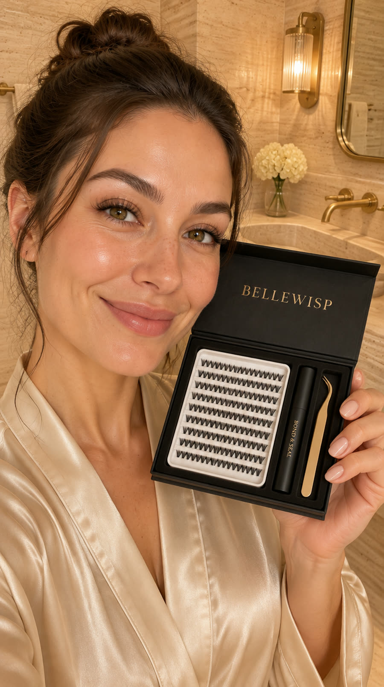

7 Reasons Women Are Ditching the Lash Salon and Doing Their Own Lashes at Home

Lash extensions look incredible — and cost a small fortune to keep up. Strip lashes are cheap, but they last one evening and you can see the band. Somewhere in between, a quieter option has taken over beauty feeds: DIY cluster lashes. Here's why so many women are making the switch.
1. The salon bill adds up fast
A full set of extensions often runs $100 or more, and fills every few weeks keep the meter running. A cluster kit gives you the same fuller, fluffy look for a fraction of that — from $46.33 per kit in a bundle.
2. Ten to fifteen minutes, not two hours
No booking, no lying still under a lamp. Once you get the hang of it, a full set takes most people 10–15 minutes in front of their own mirror. (Your first one will take longer — that's normal.)
3. They stay on for days, not hours
Unlike strip lashes, clusters are bonded to your natural lashes and sealed. Buyers of this kit regularly mention wearing a set for several days — through showers, sleep and even swimming.
4. No visible band
The clusters sit under your natural lashes, so there's no stiff strip along your lash line. Up close, they read as your lashes, just better.
Try the kit
Natural, Fluffy or Dramatic · free tracked shipping · 30-day money-back guarantee
See the sets5. You choose the look
Wispy and natural for the office, dramatic for a night out. Pick 30D, 40D or 50D clusters, or mix lengths for a cat-eye effect.
6. One wand does both jobs
The 2-in-1 Bond & Seal means one tube, two ends: bond before you place, seal when you're done. Buyers single out the bond as the part that makes this kit hold.

7. Thousands of real buyers already love it
This exact kit has more than 6,500 verified reviews with a 4.9-star average. We show the written reviews from US buyers — the good and the "it took me a few tries" — on our product page.
Ready for salon lashes at home?
If it's not for you, email us within 30 days of delivery for a refund.
Shop the kitResults vary with natural lash length and application skill. Salon prices are typical US ranges and vary by location. Lifestyle images are illustrative and may be AI-generated.